공조냉동기계기사(구) (2017-05-07 기출문제)
1과목: 기계열역학
1. 저열원 20℃와 고열원 700℃ 사이에서 작동하는 카르노 열기관의 열효율은 약 몇 %인가?
- 30.1%
- 69.9%
- 52.9%
- 74.1%
(정답률: 79%)

2. 다음 중 비가역 과정으로 볼 수 없는 것은?
- 마찰 현상
- 낮은 압력으로의 자유 팽창
- 등온 열전달
- 상이한 조성물질의 혼합
(정답률: 70%)
3. 압력이 106N/m2, 체적이 1m3인 공기가 압력이 일정한 상태에서 400kJ의 일을 하였다. 변화 후의 체적은 약 몇 m3인가?
- 1.4
- 1.0
- 0.6
- 0.4
(정답률: 59%)
4. 그림의 랭킨 사이클(온도(T)-엔트로피(s)선도)에서 각각의 지점에서 엔탈피는 표와 같을 때 이 사이클의 효율은 약 몇 % 인가?
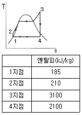
- 33.7%
- 28.4%
- 25.2%
- 22.9%
(정답률: 72%)
5. 그림과 같이 상태 1, 2 사이에서 계가 1→A→2→B→1 과 같은 사이클을 이루고 있을 때, 열역학 제1법칙에 가장 적합한 표현은? (단, 여기서 Q는 열량, W는 계가 하는 일, U는 내부에너지를 나타낸다.)
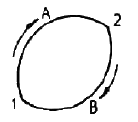
- dU = δQ + δW
- ΔU = Q - W
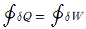
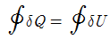
(정답률: 62%)
6. 100kPa, 25℃ 상태의 공기가 있다. 이 공기의 엔탈피가 298.615 kJ/kg 이라면 내부에너지는 약 몇 kJ/kg 인가? (단, 공기는 분자량 28.97인 이상기체로 가정한다.)
- 213.⑤ kJ/kg
- 241.07 kJ/kg
- 298.15 kJ/kg
- 383.72 kJ/kg
(정답률: 56%)
7. 압력이 일정할 때 공기 5kg을 0℃에서 100℃까지 가열하는데 필요한 열량은 약 몇 kJ 인가? (단, 비열(Cp)은 온도 T(℃)에 관계한 함수로 Cp(kJ/kgㆍ℃)) = 1.01+0.000079×T이다.)
- 365
- 436
- 480
- 507
(정답률: 73%)
8. 열교환기를 흐름 배열(flow arrangement)에 따라 분류할 때 그림과 같은 형식은?
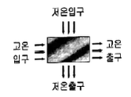
- 평행류
- 대향류
- 병행류
- 직교류
(정답률: 75%)
9. 온도 15℃, 압력 100kPa 상태의 체적이 일정한 용기 안에 어떤 이상 기체 5kg이 들어 있다. 이 기체가 50℃가 될 때까지 가열되는 동안의 엔트로피 증가량은 약 몇 kJ/K 인가? (단, 이 기체의 정압비열과 정적비열은 각각 1.001kJ/(kgㆍK), 0.7171 kJ/(kgㆍK)이다.)
- 0.411
- 0.486
- 0.575
- 0.732
(정답률: 61%)
10. 다음 온도에 관한 설명 중 틀린 것은?
- 온도는 뜨겁거나 차가운 정도를 나타낸다.
- 열역학 제0법칙은 온도 측정과 관계된 법칙이다.
- 섭씨온도는 표준 기압하에서 물의 어는점과 끓는 점을 각각 0과 100으로 부여한 온도척도이다.
- 화씨 온도 F와 절대온도 K사이에는 K=F+273.15 의 관계가 성립한다.
(정답률: 79%)
11. 밀폐계에서 기체의 압력이 100kPa으로 일정하게 유지되면서 체적이 1m3에서 2m3으로 증가되었을 때 옳은 설명은?
- 밀폐계의 에너지 변화는 없다.
- 외부로 행한 일은 100kJ이다.
- 기체가 이상기체라면 온도가 일정하다.
- 기체가 받은 열은 100kJ이다.
(정답률: 69%)
12. 출력 10000kW의 터빈 플랜트의 시간당 연료소비량이 5000 kg/h이다. 이 플랜트의 열효율은 약 몇 % 인가? (단, 연료의 발열량은 33440 kJ/kg이다.)
- 25.4%
- 21.5%
- 10.9%
- 40.8%
(정답률: 74%)
13. 역 Carnot cycle로 300K와 240K사이에서 작동하고 있는 냉동기가 있다. 이 냉동기의 성능계수는?
- 3
- 4
- 5
- 6
(정답률: 70%)
14. 보일러의 입구의 압력이 9800kN/m2이고, 응축기의 압력이 4900N/m2일 때 펌프가 수행한 일은 약 몇 kJ/kg 인가? (단, 물의 비체적은 0.001m3/kg 이다.)
- 9.79
- 15.17
- 87.25
- 180.52
(정답률: 71%)
15. 오토(Otto) 사이클에 관한 일반적인 설명 중 틀린 것은?
- 불꽃 점화 기관의 공기 표준 사이클이다.
- 연소과정을 정적 가열과정으로 간주한다.
- 압축비가 클수록 효율이 높다.
- 효율은 작업기체의 종류와 무관하다.
(정답률: 71%)
16. 열역학 제2법칙과 관련된 설명으로 옳지 않은 것은?
- 열효율이 100%인 열기관은 없다.
- 저온 물체에서 고온 물체로 열은 자연적으로 전달되지 않는다.
- 폐쇄계와 그 주변계가 열교환이 일어날 경우 폐쇄계와 주변계 각각의 엔트로피는 모두 상승한다.
- 동일한 온도 범위에서 작동되는 가역 열기관은 비가역 열기관보다 열효율이 높다.
(정답률: 58%)
17. 10kg의 증기가 온도 50℃, 압력 38kPa, 체적 7.5m3일 때 총 내부에너지는 6700kJ이다. 이와 같은 상태의 증기가 가지고 있는 엔탈피는 약 몇 kJ인가?
- 606
- 1794
- 33⑤
- 6985
(정답률: 73%)
18. 다음 중 정확하게 표기된 SI 기본단위(7가지)의 개수가 가장 많은 것은? (단, SI 유도단위 및 그 외 단위는 제외한다.)
- A, Cd, ℃, kg, m, Mol, N, s
- cd, J, K, kg, m, Mol, Pa, s
- A, J, ℃, kg, km, mol, S, W
- K, kg, km, mol, N, Pa, S, W
(정답률: 67%)
19. 어느 증기터빈에 0.4kg/s로 증기가 공급되어 260kW의 출력을 낸다. 입구의 증기 엔탈피 및 속도는 각각 3000kJ/kg, 720m/s, 출구의 증기 엔탈피 및 속도는 각각 2500kJ/kg, 120m/s 이면, 이 터빈의 열손실은 약 몇 kW가 되는가?
- 15.9
- 40.8
- 20.0
- 104
(정답률: 51%)
20. 8℃의 이상기체를 가역단열 압축하여 그 체적을 1/5로 하였을 때 기체의 온도는 약 몇 ℃인가? (단, 이 기체의 비열비는 1.4 이다.)
- -125℃
- 294℃
- 222℃
- 262℃
(정답률: 68%)
2과목: 냉동공학
21. 증기압축식 냉동장치에 관한 설명으로 옳은 것은?
- 증발식 응축기에서는 대기의 습구온도가 저하하면 고압압력은 통상의 운전 압력보다 높게 된다.
- 압축기의 흡입압력이 낮게 되면 토출압력도 낮게 되어 냉동능력이 증대한다.
- 언로더 부착 압축기를 사용하면 급격하게 부하가 증가하여도 액백(liquid back)현상을 막을 수 있다.
- 액배관에 플래쉬 가스가 발생하면 냉매 순환량이 감소되어 증발기의 냉동능력이 저하된다.
(정답률: 71%)
22. 열전달에 관한 설명으로 틀린 것은?
- 전도란 물체 사이의 온도차에 의한 열의 이동현상이다.
- 대류란 유체의 순환에 의한 열의 이동현상이다.
- 대류 열전달계수의 단위는 열통과율의 단위와 같다.
- 열전도율의 단위는 W/m2ㆍK 이다.
(정답률: 72%)
23. 방열벽의 열통과율(K)이 0.2kcal/m2ㆍhㆍ℃이며, 외기와 벽면과의 열전달율(α1)은 20kcal/m2ㆍhㆍ℃, 실내공기와 벽면과의 열전달율(α2)이 5kcal/m2ㆍhㆍ℃, 방열층의 열전도율(λ)이 0.03kcal/mㆍhㆍ℃라 할 때, 방열벽의 두께는 얼마가 되는가?
- 142.5 mm
- 146.5 mm
- 155.5 mm
- 164.5 mm
(정답률: 63%)
24. 프레온 냉매를 사용하는 냉동장치에 공기가 침입하면 어떤 현상이 일어나는가?
- 고압 압력이 높아지므로 냉매 순환량이 많아지고 냉동능력도 증가한다.
- 냉동톤당 소요동력이 증가한다.
- 고압 압력은 공기의 분압만큼 낮아진다.
- 배출가스의 온도가 상승하므로 응축기의 열통과율이 높아지고 냉동능력도 증가한다.
(정답률: 77%)
25. 2단 냉동사이클에서 응축압력을 Pc, 증발압력을 Pe 라 할 때, 이론적인 최적의 중간압력으로 가장 적당한 것은?
- Pc×Pe
- (Pc×Pe)1/2
- (Pc×Pe)1/3
- (Pc×Pe)1/4
(정답률: 78%)
26. -15℃의 R134a 냉매 포화액의 엔탈피는 180.1kJ/kg, 같은 온도에서 포화증기의 엔탈피는 389.6kJ/kg이다. 증기압축식 냉동시스템에서 팽창밸브 직전의 액의 엔탈피가 237.5 kJ/kg 이라면 팽창밸브를 통과한 후 냉매의 건도는?
- 0.27
- 0.32
- 0.56
- 0.72
(정답률: 64%)
27. 밀도가 1200kg/m3, 비열이 0.7⑤kcal/kgㆍ℃인 염화칼슘 브라인을 사용하는 냉각기의 브라인 입구온도가 -10℃, 출구온도가 -4℃ 되도록 냉각기를 설계하고자 한다. 냉동부하가 36000kcal/h 라면 브라인의 유량은 얼마이어야 하는가?
- 118 L/min
- 120 L/min
- 136 L/min
- 150 L/min
(정답률: 64%)
28. 냉매의 구비 조건에 대한 설명으로 틀린 것은?
- 증기의 비체적이 작을 것
- 임계온도가 충분히 높을 것
- 점도와 표면장력이 크고 전열성능이 좋을 것
- 부식성이 적을 것
(정답률: 85%)
29. 공랭식 냉동장치에서 응축압력이 과다하게 높은 경우가 아닌 것은?
- 순환공기 온도가 높을 때
- 응축기가 불결한 상태일 때
- 장치 내 불응축가스가 존재할 때
- 공기 순환량이 충분할 때
(정답률: 81%)
30. 냉동장치에서 디스트리뷰터(distributor)의 역할로서 옳은 것은?
- 냉매의 분배
- 흡입가스의 과열방지
- 증발온도의 저하방지
- 플래쉬가스의 발생방지
(정답률: 72%)
31. 암모니아 냉동기에서 압축기의 흡입 포화온도 –20℃, 응축온도 30℃, 팽창밸브의 직전온도가 25℃, 피스톤 압출량이 288m3/h 일 때, 냉동능력은? (단, 압축기의 체적효율 0.8, 흡입냉매의 엔탈피 396kcal/kg, 냉매흡입 비체적 0.62m3/kg, 팽창밸브 직전 냉매의 엔탈피 128kcal/kg이다.)
- 25 RT
- 30 RT
- 35 RT
- 40 RT
(정답률: 61%)
32. 냉매 액가스 열교환기의 사용에 대한 설명으로 틀린 것은?
- 액가스 열교환기는 보통 암모니아 장치에는 사용하지 않는다.
- 프레온 냉동장치에서 액압축 방지 및 액관 중의 플래쉬 가스 발생을 방지하는데 도움이 된다.
- 증발기로 들어가는 저온의 냉매 증기와 압축기에서 응축기에 이르는 고온의 냉매액을 열교환시키는 방법을 이용한다.
- 습압축을 방지하여 냉동효과와 성적계수를 향상시킬 수 있다.
(정답률: 43%)
33. 다음 압축기 중 압축방식에 의한 분류에 속하지 않는 것은?
- 왕복동식 압축기
- 흡수식 압축기
- 회전식 압축기
- 스크류식 압축기
(정답률: 76%)
34. 다음은 h-x(엔탈피 – 농도)선도에 흡수식 냉동기의 사이클을 나타낸 것이다. 그림에서 흡수사이클을 나타내는 것으로 옳은 것은?
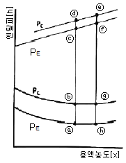
- a - b - g - h - a
- a - c - f - h - a
- b - c - f - g - b
- b - d - e - g - b
(정답률: 64%)
35. 다음 선도와 같이 응축온도만 변화하였을 때 각 사이클의 특성 비교로 틀린 것은? (단, 사이클 A : (A - B - C - D – A), 사이클 B : (A – B’- C’ - D’ - A), 사이클 C : (A – B” - C” - D” - A)이다.)
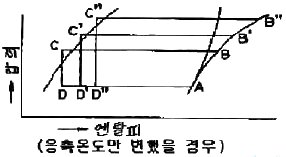
- 압축비 : 사이클C ＞ 사이클B ＞ 사이클A
- 압축일량 : 사이클C ＞ 사이클B ＞ 사이클A
- 냉동효과 : 사이클C ＞ 사이클B ＞ 사이클A
- 성적계수 : 사이클C ＜ 사이클B ＜ 사이클A
(정답률: 76%)
36. 냉동기의 압축기 윤활목적으로 틀린 것은?
- 마찰을 감소시켜 마모를 적게 한다.
- 패킹재를 보호한다.
- 열을 발생시킨다.
- 피스톤, 스터핑박스 등에서 냉매누출을 방지한다.
(정답률: 82%)
37. 증기 압축식 냉동장치의 운전 중에 액백(Liquid back)이 발생되고 있을 때 나타나는 현상으로 옳은 것은?
- 소요동력이 감소한다.
- 토출관이 뜨거워진다.
- 압축기에 서리가 생긴다.
- 냉동능력이 증가한다.
(정답률: 64%)
38. 액분리기에 관한 설명으로 옳은 것은?
- 증발기 입구에 설치한다.
- 액압축을 방지하며 압축기를 보호한다.
- 냉각할 때 침입한 공기와 냉매를 혼합시킨다.
- 증발기에 공급되는 냉매액을 냉각시킨다.
(정답률: 79%)
39. 1단 압축 1단 팽창 이론 냉동사이클에서 압축기의 압축과정은?
- 등엔탈피변화
- 정적변화
- 등엔트로피변화
- 등온변화
(정답률: 69%)
40. 실제 냉동사이클에서 냉매가 증발기에서 나온 후, 압축기의 흡입 전 흡입가스 변화는?
- 압력은 감소하고 엔탈피는 증가한다.
- 압력과 엔탈피는 감소한다.
- 압력은 증가하고 엔탈피는 감소한다.
- 압력과 엔탈피는 증가한다.
(정답률: 59%)
3과목: 공기조화
41. 20명의 인원이 각각 1개비의 담배를 동시에 피울 경우 필요한 실내 환기량은? (단, 담배 1개비당 발생하는 배연량은 0.54g/h, 1m3/h의 환기 가능한 허용 담배 연소량은 0.017g/h 이다.)
- 235 m3/h
- 347 m3/h
- 527 m3/h
- 635 m3/h
(정답률: 73%)
42. 보일러 출력표시에 대한 설명으로 틀린 것은?
- 정격출력 : 연속 운전이 가능한 보일러의 능력으로 난방부하, 급탕부하, 배관부하, 예열부하의 합이다.
- 정미출력 : 난방부하, 급탕부하, 예열부하의 합이다.
- 상용출력 : 정격출력에서 예열부하를 뺀 값이다.
- 과부하출력 : 운전초기에 과부하가 발생했을 때는 정격 출력의 10~20% 정도 증가해서 운전할 때의 출력으로 한다.
(정답률: 73%)
43. 다음 공조방식 중 개별식에 속하는 것은 어느 것인가?
- 팬 코일 유닛 방식
- 단일 덕트 방식
- 2중 덕트 방식
- 패키지 유닛 방식
(정답률: 70%)
44. 습공기의 가습 방법으로 가장 거리가 먼 것은?
- 순환수를 분무하는 방법
- 온수를 분무하는 방법
- 수증기를 분무하는 방법
- 외부공기를 가열하는 방법
(정답률: 79%)
45. 동일한 송풍기에서 회전수를 2배로 했을 경우 풍량, 정압, 소요동력의 변화에 대한 설명으로 옳은 것은?
- 풍량 1배, 정압 2배, 소요동력 2배
- 풍량 1배, 정압 2배, 소요동력 4배
- 풍량 2배, 정압 4배, 소요동력 4배
- 풍량 2배, 정압 4배, 소요동력 8배
(정답률: 73%)
46. 건물의 외벽 크기가 10m×2.5m이며, 벽 두께가 250mm인 벽체의 양 표면 온도가 각각 –15℃, 26℃일 때, 이 벽체를 통한 단위 시간당의 손실열량은? (단, 벽의 열전도율은 0.⑤kcal/mㆍhㆍ℃ 이다.)
- 20.5 kcal/h
- 2⑤ kcal/h
- 102.5 kcal/h
- 240 kcal/h
(정답률: 63%)
47. 흡수식 냉동기에 관한 설명으로 틀린 것은?
- 비교적 소용량보다는 대용량에 적합하다.
- 발생기에는 증기에 의한 가열이 이루어진다.
- 냉매는 브롬화리튬(LiBr), 흡수제는 물(H2O)의 조합으로 이루어진다.
- 흡수기에는 냉각수를 사용하여 냉각시킨다.
(정답률: 78%)
48. 장방형 덕트(긴변 a, 짧은 변 b)의 원형 덕트 지름 환산식으로 옳은 것은?
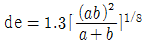
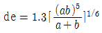
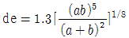
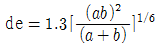
(정답률: 79%)
49. 온수난방설계 시 달시-바이스바하(Darcy-Weibach)의 수식을 적용한다. 이 식에서 마찰저항계수와 관련이 있는 인자는?
- 누셀수(Nu)와 상대조도
- 프란틀수(Pr)와 절대조도
- 레이놀즈수(Re)와 상대조도
- 그라쇼프수(Gr)와 절대조도
(정답률: 80%)
50. 공기 중의 수증기가 응축하기 시작할 때의 온도 즉, 공기가 포화상태로 될 때의 온도를 무엇이라고 하는가?
- 건구온도
- 노점온도
- 습구온도
- 상당외기온도
(정답률: 78%)
51. 공기 중의 수분이 벽이나 천장, 바닥 등에 닿았을 때 응축되어 이슬이 맺히는 경우가 있다. 이와 같은 수분의 응축 결로를 방지하는 방법으로 적절하지 않은 것은?
- 다습한 외기를 도입하지 않도록 한다.
- 벽체인 경우 단열재를 부착한다.
- 유리창인 경우 2중유리를 사용한다.
- 공기와 접촉하는 벽면의 온도를 노점온도 이하로 낮춘다.
(정답률: 75%)
52. 에너지 절약의 효과 및 사무자동화(OA)에 의한 건물에서 내부발생열의 증가와 부하변동에 대한 제어성이 우수하기 때문에 대규모 사무실 건물에 적합한 공기조화 방식은?
- 정풍량(CAV) 단일덕트 방식
- 유인유닛 방식
- 룸 쿨러 방식
- 가변풍량(VAV) 단일덕트 방식
(정답률: 77%)
53. 바닥취출 공조방식의 특징으로 틀린 것은?
- 천장 덕트를 최소화 하여 건축 층고를 줄일 수 있다.
- 개개인에 맞추어 풍량 및 풍속 조절이 어려워 쾌적성이 저해된다.
- 가압식의 경우 급기거리가 18m 이하로 제한된다.
- 취출온도와 실내온도 차이가 10℃ 이상이면 드래프트 현상을 유발할 수 있다.
(정답률: 57%)
54. 실내의 냉방 현열부하가 5000kcal/h, 잠열부하가 800kcal/h, 방을 실온 26℃로 냉각하는 경우 송풍량은? (단, 취출온도는 15℃이며, 건공기의 정압비열은 0.24kcal/kgㆍ℃, 공기의 비중량은 1.2kg/m3이다.)
- 1578 m3/h
- 878 m3/h
- 678 m3/h
- 578 m3/h
(정답률: 66%)
55. 실내를 항상 급기용 송풍기를 이용하여 정압(+)상태로 유지할 수 있어서 오염된 공기의 침입을 방지하고, 연소용 공기가 필요한 보일러실, 반도체 무균실, 소규모 변전실, 창고 등에 적합한 환기법은?
- 제 1종 환기
- 제 2종 환기
- 제 3종 환기
- 제 4종 환기
(정답률: 71%)
56. 단일덕트 재열방식의 특징으로 틀린 것은?
- 냉각기에 재열부하가 추가된다.
- 송풍 공기량이 증가한다.
- 실별 제어가 가능하다.
- 현열비가 큰 장소에 적합하다.
(정답률: 52%)
57. 가변풍량 공조방식의 특징으로 틀린 것은?
- 다른 방식에 비하여 에너지 절약 효과가 높다.
- 실내공기의 청정화를 위하여 대풍량이 요구될 때 적합하다.
- 각 실의 실온을 개별적으로 제어할 때 적합하다.
- 동시사용률을 고려하여 기기용량을 결정할 수 있어 정풍량 방식에 비하여 기기의 용량을 적게 할 수 있다.
(정답률: 68%)
58. 습공기의 성질에 대한 설명으로 틀린 것은?
- 상대습도란 어떤 공기의 절대습도와 동일온도의 포화습공기의 절대습도의 비를 말한다.
- 절대습도는 습공기에 포함된 수증기의 중량을 건공기 1kg에 대하여 나타낸 것이다.
- 포화공기란 습공기 중의 절대습도, 건구온도 등이 변화하면서 수증기가 포화상태에 이른 공기를 말한다.
- 무입공기란 포화수증기 이상의 수분을 함유하여 공기중에 미세한 물방울을 함유하는 공기를 말한다.
(정답률: 59%)
59. 공기조화설비는 공기조화기, 열원장치 등 4대 주요장치로 구성되어 있다. 4대 주요장치의 하나인 공기조화기에 해당되는 것이 아닌 것은?
- 에어필터
- 공기냉각기
- 공기가열기
- 왕복동 압축기
(정답률: 70%)
60. 다음 습공기 선도의 공기조화과정을 나타낸 장치도는? (단, ① = 외기, ② = 환기, HC = 가열기, CC = 냉각기이다.)
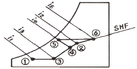
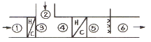
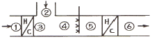
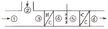
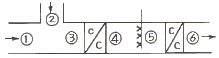
(정답률: 74%)
4과목: 전기제어공학
61. 논리식 중 동일한 값을 나타내지 않는 것은?
- X (X + Y)
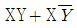
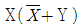
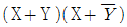
(정답률: 68%)
62. 광전형 센서에 대한 설명으로 틀린 것은?
- 전압 변화형 센서이다.
- 포토 다이오드, 포토 TR 등이 있다.
- 반도체의 pn접합 기전력을 이용한다.
- 초전 효과(pyroelectric effect)를 이용한다.
(정답률: 56%)
63. 3상 권선형 유도전동기 2차측에 외부저항을 접속하여 2차 저항값을 증가시키면 나타나는 특성으로 옳은 것은?
- 슬립 감소
- 속도 증가
- 기동토크 증가
- 최대토크 증가
(정답률: 59%)
64. R, L, C 가 서로 직렬로 연결되어 있는 회로에서 양단의 전압과 전류가 동상이 되는 조건은?
- ω = LC
- ω = L2C
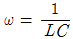
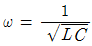
(정답률: 74%)
65. 콘덴서의 정전용량을 높이는 방법으로 틀린 것은?
- 극판의 면적을 넓게 한다.
- 극판간의 간격을 작게 한다.
- 극판 간의 절연 파괴 전압을 작게 한다.
- 극판 사이의 유전체를 비유전율이 큰 것으로 사용한다.
(정답률: 53%)
66. 그림과 같은 계전기 접점회로의 논리식은?
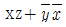
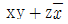
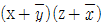
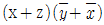
(정답률: 62%)
67. 계측기 선정 시 고려사항이 아닌 것은?
- 신뢰도
- 정확도
- 미려도
- 신속도
(정답률: 73%)
68. (3/2)ㆍπ(rad)단위를 각도(°) 단위로 표시하면 얼마인가?
- 120°
- 240°
- 270°
- 360°
(정답률: 73%)
69. 궤환제어계에 속하지 않는 신호로서 외부에서 제어량이 그 값에 맞도록 제어계에 주어지는 신호를 무엇이라 하는가?
- 목표값
- 기준 입력
- 동작 신호
- 궤환 신호
(정답률: 46%)
70. 타력제어와 비교한 자력제어의 특징 중 틀린 것은?
- 저비용
- 구조 간단
- 확실한 동작
- 빠른 조작 속도
(정답률: 71%)
71. 그림(a)의 직렬로 연결된 저항회로에서 입력전압 V1과 출력전압 Vo의 관계를 그림(b)의 신호흐름선도로 나타날 때 A 에 들어갈 전달함수는?
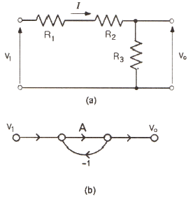
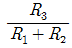
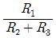
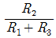
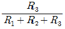
(정답률: 59%)
72. 다음 (a), (b) 두 개의 블록선도가 등가가 되기 위한 K는?
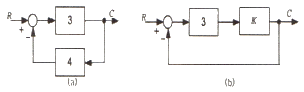
- 0
- 0.1
- 0.2
- 0.3
(정답률: 62%)
73. 무인 커피 판매기는 무슨 제어인가?
- 서보기구
- 자동조정
- 시퀀스제어
- 프로세스제어
(정답률: 64%)
74. 공작기계를 이용한 제품가공을 위해 프로그램을 이용하는 제어와 가장 관계 깊은 것은?
- 속도 제어
- 수치 제어
- 공정 제어
- 최적 제어
(정답률: 63%)
75. 전압, 전류, 주파수 등의 양을 주로 제어하는 것으로 응답속도가 빨라야 하는 것이 특징이며, 정전압장치나 발전기 및 조속기의 제어 등에 활용하는 제어방법은?
- 서보기구
- 비율제어
- 자동조정
- 프로세스제어
(정답률: 53%)
76. 단상변압기 3대를 Δ결선하여 3상 전원을 공급하다가 1대의 고장으로 인하여 고장난 변압기를 제거하고 V결선으로 바꾸어 전력을 공급할 경우 출력은 당초 전력의 약 몇 % 까지 가능하겠는가?
- 46.7
- 57.7
- 66.7
- 86.7
(정답률: 54%)
77. 도체를 늘려서 길이가 4배인 도선을 만들었다면 도체의 전기저항은 처음의 몇 배인가?
- 1/4
- 1/16
- 4
- 16
(정답률: 50%)
78. L=4H 인 인덕턴스에 i=-30e-3tA의 전류가 흐를 때 인덕턴스에 발생하는 단자전압은 몇 V인가?
- 90e-3t
- 120e-3t
- 180e-3t
- 360e-3t
(정답률: 41%)
79. 출력의 변동을 조정하는 동시에 목표값에 정확히 추종하도록 설계한 제어계는?
- 타력 제어
- 추치 제어
- 안정 제어
- 프로세서 제어
(정답률: 67%)
80. 제어기기의 변환요소에서 온도를 전압으로 변환시키는 요소는?
- 열전대
- 광전지
- 벨로우즈
- 가변 저항기
(정답률: 76%)
5과목: 배관일반
81. 관의 부식 방지 방법으로 틀린 것은?
- 전기 절연을 시킨다.
- 아연도금을 한다.
- 열처리를 한다.
- 습기의 접촉을 없게 한다.
(정답률: 75%)
82. 급탕 배관에서 설치되는 팽창관의 설치위치로 적당한 것은?
- 순환펌프와 가열장치 사이
- 가열장치와 고가탱크 사이
- 급탕관과 환수관 사이
- 반탕관과 순환펌프 사이
(정답률: 60%)
83. 기수 혼합식 급탕설비에서 소음을 줄이기 위해 사용되는 기구는?
- 서모스탯
- 사일렌서
- 순환펌프
- 감압밸브
(정답률: 78%)
84. 다음 중 소형, 경량으로 설치면적이 적고 효율이 좋으므로 가장 많이 사용되고 있는 냉각탑의 종류는?
- 대기식 냉각탑
- 대향류식 냉각탑
- 직교류식 냉각탑
- 밀폐식 냉각탑
(정답률: 70%)
85. 도시가스 입상배관의 관 지름이 20mm 일 때 움직이지 않도록 몇 m 마다 고정 장치를 부착해야 하는가?
- 1m
- 2m
- 3m
- 4m
(정답률: 76%)
86. 공장에서 제조 정제된 가스를 저장했다가 공급하기 위한 압력탱크로 가스압력을 균일하게 하며, 급격한 수요변화에도 제조량과 소비량을 조절하기 위한 장치는?
- 정압기
- 압축기
- 오리피스
- 가스홀더
(정답률: 67%)
87. 배관 도시기호 치수기입법 중 높이 표시에 관한 설명으로 틀린 것은?
- EL : 배관의 높이를 관의 중심을 기준으로 표시
- GL : 포장된 지표면을 기준으로 하여 배관장치의 높이를 표시
- FL : 1층의 받닥면을 기준으로 표시
- TOP : 지름이 다른 관의 높이를 나타낼 때 관외경의 아랫면까지를 기준으로 표시
(정답률: 69%)
88. 급수배관에 관한 설명으로 옳은 것은?
- 수평배관은 필요할 경우 관내의 물을 배제하기 위하여 1/100∼1/150 의 구배를 준다.
- 상향식 급수배관의 경우 수평주관은 내림구배, 수평분기관은 올림구배로 한다.
- 배관이 벽이나 바닥을 관통하는 곳에는 후일 수리시 교체가 쉽도록 슬리브(sleeve)를 설치한다.
- 급수관과 배수관을 수평으로 매설하는 경우 급수관을 배수관의 아래쪽이 되도록 매설한다.
(정답률: 64%)
89. 호칭지름 20A 인 강관을 2개의 45° 엘보를 사용해서 그림과 같이 연결하고자 한다. 밑면과 높이가 똑같이 150mm라면 빗면 연결부분의 관의 실제소요길이(ℓ)는? (단, 45°엘보 나사부의 길이는 15mm, 이음쇠의 중심선에서 단면까지 거리는 25mm로 한다.)
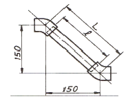
- 178 mm
- 180 mm
- 192 mm
- 212 mm
(정답률: 59%)
90. 저압가스배관에서 관 내경이 25mm에서 압력손실이 320mmAq이라면, 관 내경이 50mm로 2배로 되었을 때 압력손실은 얼마인가?
- 160mmAq
- 80mmAq
- 32mmAq
- 10mmAq
(정답률: 31%)
91. 증기배관의 트랩장치에 관한 설명이 옳은 것은?
- 저압증기에서는 보통 버킷형 트랩을 사용한다.
- 냉각레그(cooling leg)는 트랩의 입구 쪽에 설치한다.
- 트랩의 출구쪽에는 스트레이너를 설치한다.
- 플로트형 트랩은 상·하 구분없이 수직으로 설치한다.
(정답률: 50%)
92. 냉동배관 재료 구비조건으로 틀린 것은?
- 가공성이 양호 할 것
- 내식성이 좋을 것
- 냉매와 윤활유가 혼합될 때, 화학적 작용으로 인한 냉매의 성질이 변하지 않을 것
- 저온에서 기계적 강도 및 압력손실이 적을 것
(정답률: 62%)
93. 보온재의 구비조건으로 틀린 것은?
- 열전도율이 적을 것
- 균열 신축이 적을 것
- 내식성 및 내열성이 있을 것
- 비중이 크고 흡습성이 클 것
(정답률: 81%)
94. 급탕배관의 관경을 결정할 때 고려해야 할 요소로 가장 거리가 먼 것은?
- 마다의 마찰손실
- 순환수량
- 관내유속
- 펌프의 양정
(정답률: 59%)
95. 증기난방 배관설비의 응축수 환수방법 중 증기의 순환이 가장 빠른 방법은?
- 진공 환수식
- 기계 환수식
- 자연 환수식
- 중력 환수식
(정답률: 71%)
96. 가스배관 경로 선정 시 고려하여야 할 내용으로 적당하지 않은 것은?
- 최단거리로 할 것
- 구부러지거나 오르내림을 적게 할 것
- 가능한 은폐매설을 할 것
- 가능한 옥외에 설치할 것
(정답률: 78%)
97. 부력에 의해 밸브를 개폐하여 간헐적으로 응축수를 배출하는 구조를 가진 증기 트랩은?
- 열동식 트랩
- 버킷 트랩
- 플로트 트랩
- 충격식 트랩
(정답률: 58%)
98. 통기관에 관한 설명으로 틀린 것은?
- 각개통기관의 관경은 그것이 접속되는 배수관 관경의 1/2이상으로 한다.
- 통기방식에는 신정통기, 각개통기, 회로통기 방식이 있다.
- 통기관은 트랩내의 봉수를 보호하고 관내 청결을 유지한다.
- 배수입관에서 통기입관의 접속은 90°T 이음으로 한다.
(정답률: 76%)
99. 배관에 사용되는 강관은 1℃변화함에 따라 1m당 몇 mm만큼 팽창하는가? (단, 관의 열팽창 계수는 0.00012m/m·℃ 이다.)
- 0.012
- 0.12
- 0.022
- 0.22
(정답률: 69%)
100. 다음 신축이음 중 주로 증기 및 온수 난방용 배관에 사용되는 것은?
- 루프형 신축이음
- 슬리브형 신축이음
- 스위블형 신축이음
- 벨로즈형 신축이음
(정답률: 55%)